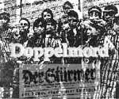
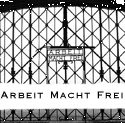

Das Gift der bewegten Bilder
Die antisemitischen Propagandafilme Jud Süß und Der Ewige Jude
Stefan Mannes hat darüber seine Staatsexamensarbeit am
Historischen Seminar der Albert-Ludwigs- Universität in Freiburg geschrieben.
Für Shoah Project hat er uns dankbarerweise eine kurze Zusammenfassung geschickt.
Die kommplette Arbeit ist im Januar 1999 als Buch erschienen.
Seit März 1997 sind seine Seiten über Janusz Korczak im Shoah Project.

Doppelmord

"Die Arisierung von Immobilienvermögen und die Schachtung von Mietern im
Dienste der Judenvernichtung"


Dr. Rolf Kornemann, Geschäftsführer der Bausparkasse in Ludwigsburg, führt in seinem Referat Teile der bisher kaum aufgear- beiteten antijüdischen Ver- mögens- und Wohnungs- politik der Nazis auf. Er zeigt auf, wie dem Juden vor seiner physischen Vernichtung sein Beruf, seine Heimat und sein Eigentum genommen wurde, den reibunglos funktionierenden administrativen Vernichtungsapparat der Nazis.KZ Dachau

Im Juni 1996 nach einem Besuch der Gedenkstätte in Dachau, hatte sich Birgit Pauli-Haack entschlossen, ein paar Daten über das KZ Dachau auf ihrer Homepage unter dem Titel "Wachsam bleiben - Erinnern!" zu veröffentlichen. Daraus ist dann das Shoah Project entstanden.